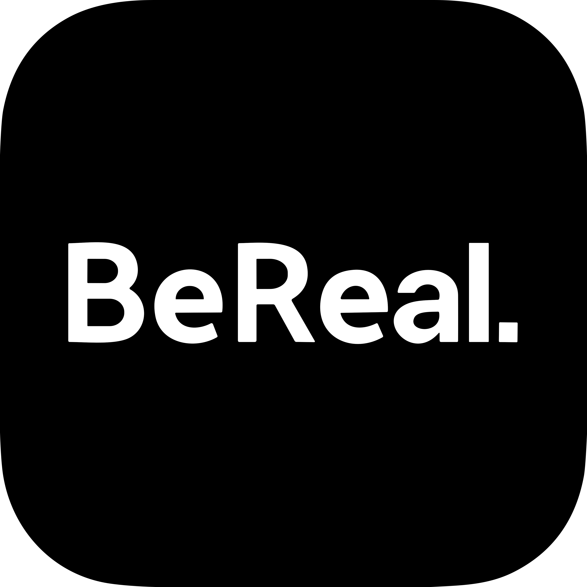
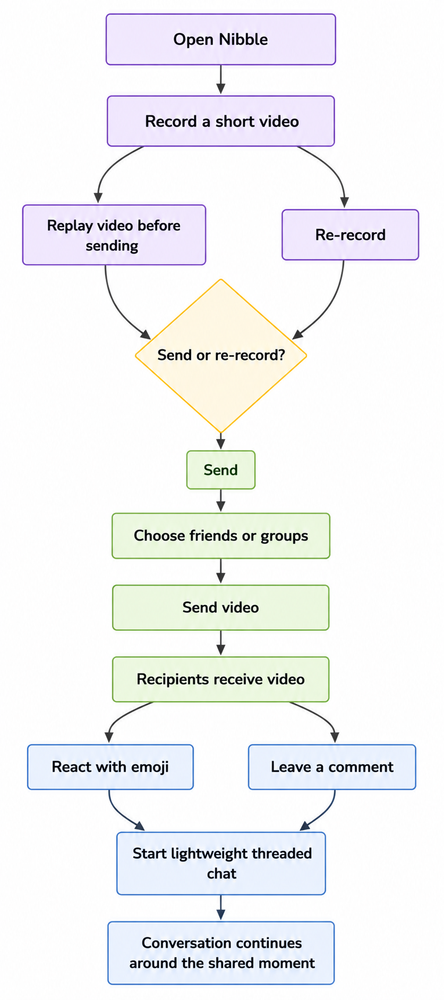
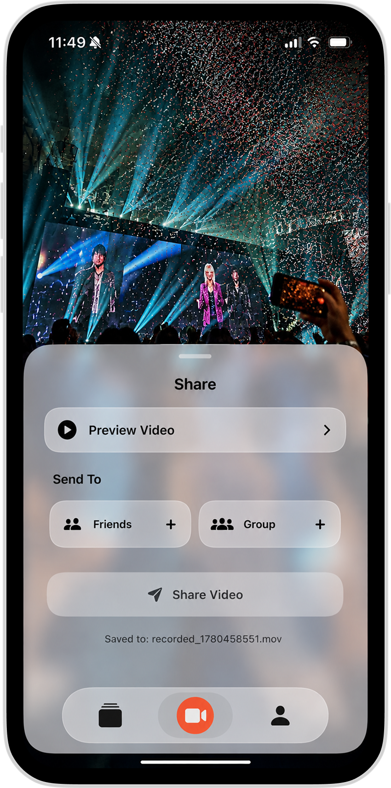
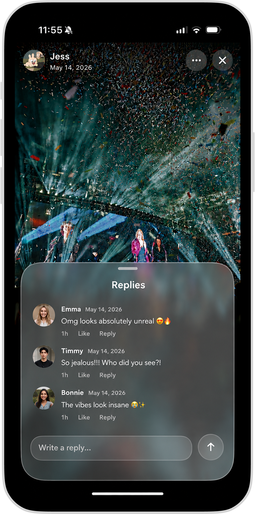

Nibble
Built and launched Nibble, a private video-sharing app for close relationships.
Overview
Before studying abroad, I started wondering: as life becomes busier and it becomes harder to meet the people who matter to us, how can we continue to be part of each other’s everyday lives? Instagram felt too public for small personal moments, while LINE was crowded with work and group messages. Existing social products lacked a relaxed space for sharing everyday life. This observation became Nibble: an app that lets people casually capture and share small life moments while staying connected with close friends.
I independently led the product vision, market research, product strategy, UI/UX design, AI-assisted prototyping, and user testing.
AI-Native Market Research
I built an AI-assisted research workflow combining Reddit discussions, competitor analysis, user interviews, and NotebookLM synthesis.
AI Workflow
Tools Used

- ChatGPT
- NotebookLM
- Reddit research
- Competitive analysis
Research Scale
- 20+ Reddit discussions analyzed
- 5 competitor ecosystems studied: Instagram, Instagram Close Friends, Snapchat, BeReal, and Locket
- Multiple real-world interviews across long-distance friendship, family relationship, and communication behavior contexts
Research Process
- Collected qualitative signals from Reddit communities and user interviews.
- Used NotebookLM to synthesize recurring themes and behavioral patterns.
- Challenged assumptions by comparing relationship behaviors, sharing habits, and competitor mechanics.
- Translated raw observations into product hypotheses and positioning opportunities.
Key Findings
Relationships rarely fade because people stop caring. They fade because everyday moments go unshared.
Across communities, people wanted to stay connected with friends and family, yet hesitated to reach out because they did not know what to say, worried about bothering others, felt their updates were not important enough, or experienced communication as increasingly intentional rather than spontaneous.
Strategic Insight
The biggest barrier to relationship maintenance is not communication itself, but the friction of initiating communication. Products such as Snapchat, BeReal, and Instagram Close Friends reduce this friction by creating recurring reasons to share.
People don't need another messaging app. They need a low-pressure way to stay present in each other's lives.
Market & Competitive Analysis
| Platform | Strength | Weakness |
|---|---|---|
 Instagram
Instagram
|
Strong visual sharing, Stories behavior, and social discovery | Audience-aware and easy to overthink; sharing can feel performative |
 LINE
LINE
|
Reliable everyday communication and broad adoption in Taiwan | Feature-heavy and utility-first; intimate updates can get buried |
|
 BeReal |
Authenticity-focused photo sharing with low-production expectations | Prompt-driven and photo-first; less suited to intentional private video check-ins |
 Snapchat
Snapchat
|
Fast casual sharing | Playful and fast, but less emotionally intentional for close relationships |
Product Implications
Prioritize everyday moments over polished content.
Record in the moment and share immediately.
Design for close relationships rather than broadcasting.
Share videos privately with selected friends or small groups.
Turn content into conversation instead of passive consumption.
Comment directly under shared videos or continue replying in chat.
Reduce the psychological cost of sharing.
Use lightweight reactions and simple send flows without public metrics.
UI/UX Design
Interaction Direction
- Prioritized recording and replay as primary actions.
- Simplified hierarchy to reduce decision fatigue.
- Removed public-facing social metrics.
Solution
I designed and built the iOS MVP, end-to-end user flow, interaction architecture, UI system, onboarding concepts, social interaction patterns, and emotional reaction mechanics.
Current MVP Flow






Impact & Results
Product Outcomes
- Built and launched a functional MVP on TestFlight.
- Reached 30+ user accounts, 80+ shared videos, and 10+ private groups during early MVP testing.
- Conducted user testing with 30+ participants.
- Presented the product to 40+ product builders at Taipei iOS Meetup.
- Gathered qualitative feedback to iterate on onboarding, sharing flows, and user engagement.

Key Learnings
1. Distribution matters as much as product quality
Great products do not naturally gain users. This made me more interested in distribution strategy, shareability loops, emotional virality, creator-style product marketing, and indie app growth mechanics.
2. Simplicity is harder than adding features
I repeatedly reduced UI complexity, unnecessary actions, feature creep, and interaction overload to preserve focus and emotional clarity.
3. AI changes product iteration speed
AI-assisted workflows lowered execution barriers, but strong product judgment became even more important. AI can accelerate execution, but not product taste or strategic thinking.